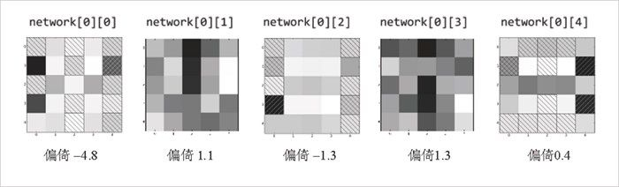

18.4 实例：战胜CAPTCHA
为了确保在网站注册的是真实的人而非“机器人”，负责产品管理的副总想在注册过程中添加 CAPTCHA 功能。
准确地讲，他想向用户展示一个数字的图片，并要求他们输入数字，以此证明他们确实是真实的人。
你告诉他这难不倒计算机，但是他却不信，所以你打算写一个可以轻松搞定这个问题的程序来说服他。
下面，我们将通过 5×5 像素的图片来显示各个数字：
@@@@@ ..@.. @@@@@ @@@@@ @...@ @@@@@ @@@@@ @@@@@ @@@@@ @@@@@
@...@ ..@.. ....@ ....@ @...@ @.... @.... ....@ @...@ @...@
@...@ ..@.. @@@@@ @@@@@ @@@@@ @@@@@ @@@@@ ....@ @@@@@ @@@@@
@...@ ..@.. @.... ....@ ....@ ....@ @...@ ....@ @...@ ....@
@@@@@ ..@.. @@@@@ @@@@@ ....@ @@@@@ @@@@@ ....@ @@@@@ @@@@@
由于我们的神经网络是以数字组成的向量作为其输入的，所以我们将每个图像转换为长度为 25 的向量，其元素的值是 1（“这个像素位于该图像中”）或 0（“这个像素不在该图像中”）。
例如，数字 0 可以表示为：
zero_digit = [1,1,1,1,1,
1,0,0,0,1,
1,0,0,0,1,
1,0,0,0,1,
1,1,1,1,1]
我们希望神经网络给出的结果能够指向一个具体的阿拉伯数字，因此我们需要 10 种不同的输出结果。例如对于数字 4 来说，正确的输出结果将是：
[0, 0, 0, 0, 1, 0, 0, 0, 0, 0]
那么，假如我们要按顺序输入 0 到 9，则相应的识别对象为：
targets = [[1 if i == j else 0 for i in range(10)]
for j in range(10)]
因此，四号识别对象即 targets[4] 的正确输出结果为数字 4。
好了，现在可以建立我们的神经网络了：
random.seed(0) # 得到重复的结果
input_size = 25 # 每个输入都是一个长度为25的向量
num_hidden = 5 # 隐藏层将含有5个神经元
output_size = 10 # 对于每个输入，我们需要10个输出结果
# 每一个隐藏神经元对每个输入都有一个权重和一个偏倚权重
hidden_layer = [[random.random() for __ in range(input_size + 1)]
for __ in range(num_hidden)]
# 每一个输出神经元对每个隐藏神经元都有一个权重和一个偏倚权重
output_layer = [[random.random() for __ in range(num_hidden + 1)]
for __ in range(output_size)]
# 神经网络是从随机权重开始的
network = [hidden_layer, output_layer]
这里，我们可以通过反向传播算法来训练我们的模型：
# 10 000次迭代看起来足够进行收敛
for __ in range(10000):
for input_vector, target_vector in zip(inputs, targets):
backpropagate(network, input_vector, target_vector)
它在训练集上效果很好：
def predict(input):
return feed_forward(network, input)[-1]
predict(inputs[7])
# [0.026, 0.0, 0.0, 0.018, 0.001, 0.0, 0.0, 0.967, 0.0, 0.0]
这表明，输出数字 7 的神经元的值为 0.97，而其他输出神经元的值则非常小。
同时，我们还可以将其应用于不同的数字表示形式上，比如数字 3 可以用如下表示形式：
predict([0,1,1,1,0, # .@@@.
0,0,0,1,1, # ...@@
0,0,1,1,0, # ..@@.
0,0,0,1,1, # ...@@
0,1,1,1,0]) # .@@@.
# [0.0, 0.0, 0.0, 0.92, 0.0, 0.0, 0.0, 0.01, 0.0, 0.12]
我们的神经网络认为它看起来非常像 3，但是对于像如下这种形式表示的数字 8，输出结果中数字 5、8 和 9 的得分都不低：
predict([0,1,1,1,0, # .@@@.
1,0,0,1,1, # @..@@
0,1,1,1,0, # .@@@.
1,0,0,1,1, # @..@@
0,1,1,1,0]) # .@@@.
# [0.0, 0.0, 0.0, 0.0, 0.0, 0.55, 0.0, 0.0, 0.93, 1.0]
也许更大的训练集会有所帮助。
虽然神经网络的运行不是完全透明的，但我们可以通过检查隐藏层的权重来了解它们的识别情况。特别地，我们可以把每个神经元的权重绘制为 5×5 的网格，该网格是与 5×5 的输入相对应的。
现实中，你可能希望数值为 0 的权重的颜色为白色，大于 0 的权重的绝对值越大，颜色（比如说）越绿，小于 0 的权重的绝对值越大，颜色（比如说）越红。令人遗憾的是，这在黑白色的书中是无法做到的。
相反，我们会用白色表示值为 0 的权重，其值离 0 越远的权重颜色越暗。同时，利用阴影线来表示符号为负的权重。
为此，我们需要用到函数 pyplot.imshow ——这是我们之前没提及的一个函数。利用它，我们可以逐像素地绘制图像。通常情况下，这个函数对于数据科学没有很大用途，但在这里，该函数意义非凡：
import matplotlib
weights = network[0][0] # 隐藏层的第一个神经元
abs_weights = map(abs, weights) # 阴影部分只取决于绝对值
grid = [abs_weights[row:(row+5)] # 将权重转化为5x5的网格
for row in range(0,25,5)] # [weights[0:5], ..., weights[20:25]]
ax = plt.gca() # 为了使用影线，我们需要轴
ax.imshow(grid, # 这里与plt.imshow一样
cmap=matplotlib.cm.binary, # 使用白-黑色度
interpolation='none') # 不进行插值处理
def patch(x, y, hatch, color):
"""return a matplotlib 'patch' object with the specified
location, crosshatch pattern, and color"""
return matplotlib.patches.Rectangle((x - 0.5, y - 0.5), 1, 1,
hatch=hatch, fill=False, color=color)
# 用交叉影线表示负权重
for i in range(5): # 行
for j in range(5): # 列
if weights[5*i + j] < 0: # row i, column j = weights[5*i + j]
# 加上黑白影线，这样无论深浅就都可见了
ax.add_patch(patch(j, i, '/', "white"))
ax.add_patch(patch(j, i, '\\', "black"))
plt.show()

图 18-4：隐藏层的各个权重
通过图 18-4 可以看到，第一个隐藏神经元在左列和中间行的中心处的权重为正值，并且绝对值较大，而右列中的权重为负值，且绝对值较大。（此外，你还会发现它的偏倚项为负值，且绝对值较大，这意味着除非它“正在考察的”输入为正，否则很难被激活。）
事实上，对于这些输入来说，它的输出确实如我们所愿：
left_column_only = [1, 0, 0, 0, 0] * 5
print feed_forward(network, left_column_only)[0][0] # 1.0
center_middle_row = [0, 0, 0, 0, 0] * 2 + [0, 1, 1, 1, 0] + [0, 0, 0, 0, 0] * 2
print feed_forward(network, center_middle_row)[0][0] # 0.95
right_column_only = [0, 0, 0, 0, 1] * 5
print feed_forward(network, right_column_only)[0][0] # 0.0
同样，中间的隐藏神经元似乎“喜欢”水平行而非两边的垂直行，且最后一个隐藏的神经元似乎“喜欢”中心行而非最右列。（其他两个神经元则很难解释。）
对我们以个性化形式表示的数字 3 运行这个神经网络，结果会是怎样呢？
my_three = [0,1,1,1,0, # .@@@.
0,0,0,1,1, # ...@@
0,0,1,1,0, # ..@@.
0,0,0,1,1, # ...@@
0,1,1,1,0] # .@@@.
hidden, output = feed_forward(network, my_three)
隐藏层的输出结果为：
0.121080 # 来自network[0][0]，可能是受到了(1, 4)的影响
0.999979 # 来自network[0][1]，(0, 2)和(2, 2)的贡献较大
0.999999 # 来自network[0][2]，除(3, 4)之外皆为正值
0.999992 # 来自network[0][3]，依旧是(0, 2)和(2, 2)的贡献较大
0.000000 # 来自network[0][4]，除了中间一行外，其他皆为负值或零值
这将进入表示“3”的输出神经元中，相应权重为 network[-1][3]：
-11.61 # hidden[0]的权重
-2.17 # hidden[1]的权重
9.31 # hidden[2]的权重
-1.38 # hidden[3]的权重
-11.47 # hidden[4]的权重
- 1.92 # 偏倚输入的权重
因此，这个神经元将计算：
sigmoid(.121 * -11.61 + 1 * -2.17 + 1 * 9.31 - 1.38 * 1 - 0 * 11.47 - 1.92)
正如我们所看到的，其值为 0.92。实际上，隐藏层是将 25 维空间计算成 5 个不同的分区，也就是说将每个 25 维的输入映射为 5 个数字。然后，每个输出神经元从这 5 个数字中挑出一个作为输出。
我们看到，my_three 落在分区 0（即只轻微激活了隐藏神经元 0）“下方”，前面是分区 1、2 和 3（即强烈激活那些隐藏神经元）“上部”，再往前些是分区 4 的底部（即所有神经元都没激活）。然后，10 个输出神经元中的每一个都会使用这 5 个激活单元来判断 my_three 是否为它们对应的数字。